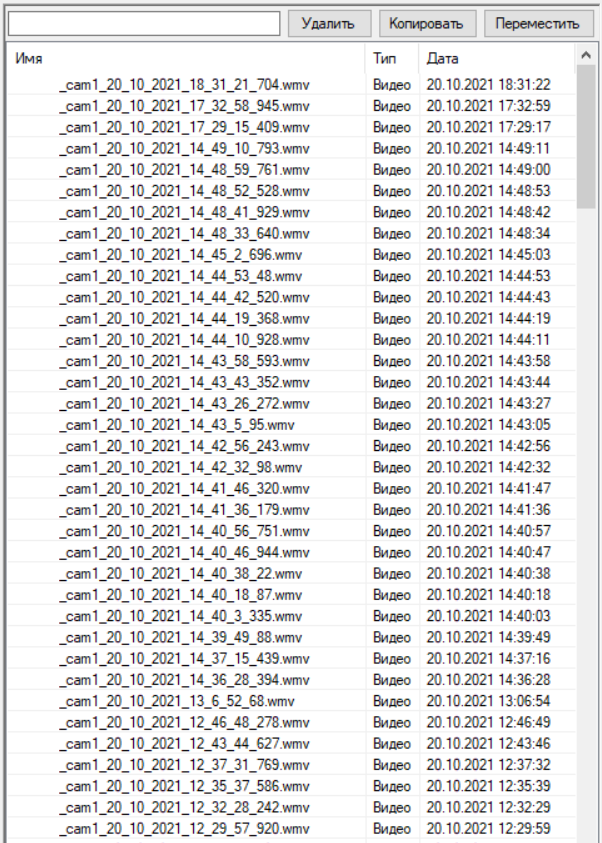
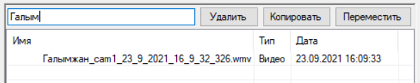

Файловый менеджер
Файловый менеджер позволяет управлять файлами из рабочей папки.
В файловом менеджере можно удалять, перемещать, копировать и переименовывать файлы.
Двойной клик левой кнопкой мыши по файлу воспроизводит его.
Одинарный клик левой кнопкой мыши по выделенному файлу запускает переименование файла.
Можно выделять множество файлов одновременно для дальнейшего удаления, перемещения и копирования.
Чтобы произвести поиск по файлам необходимо ввести поисковой запрос в поле ввода вверху
Сортировка по имени производится при помощи клика на столбец Имя
Сортировка по типу файла при помощи клика на столбец Тип
Сортировка по дате при помощи клика на столбец Дата
Имеется возможность скрыть файловый менеджер
Shift+Up Выделение вверх
Shift+Down Выделение вниз
Shift+Home Выделение до начала
Shift+End Выделение до конца